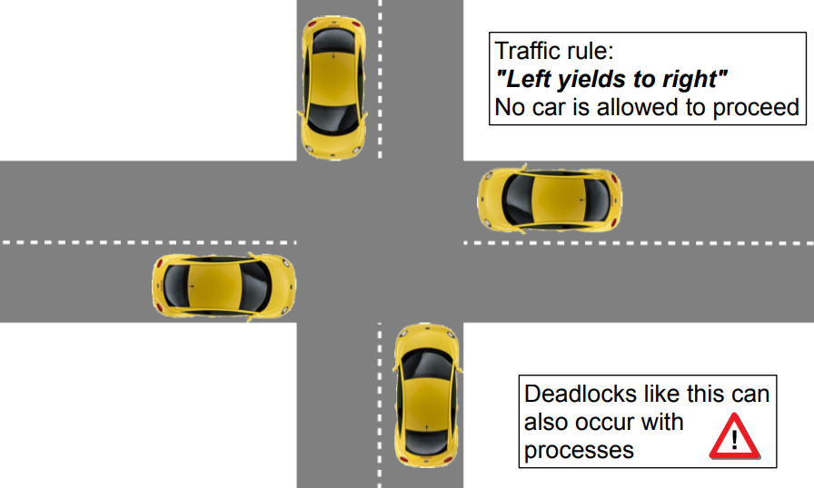
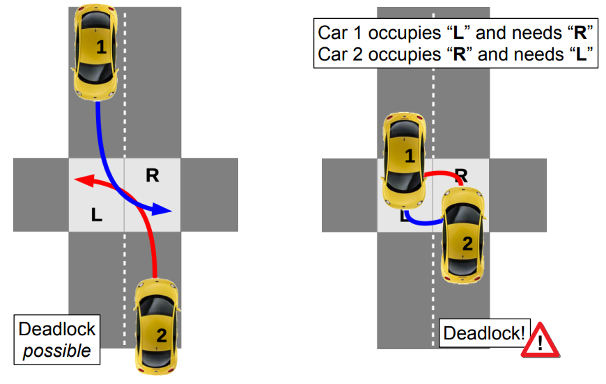
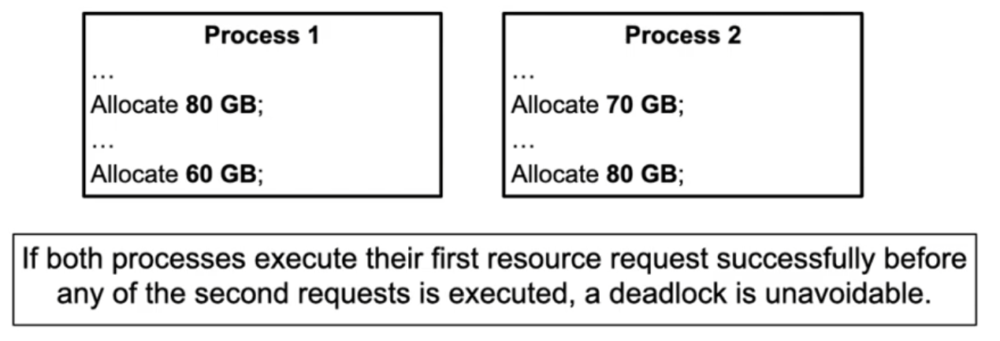
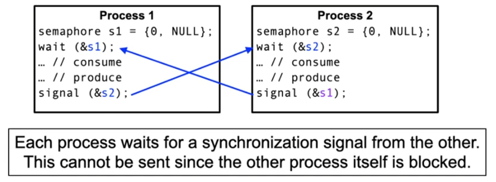
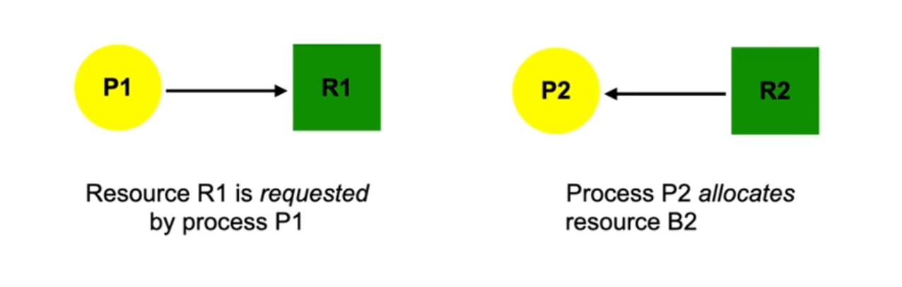
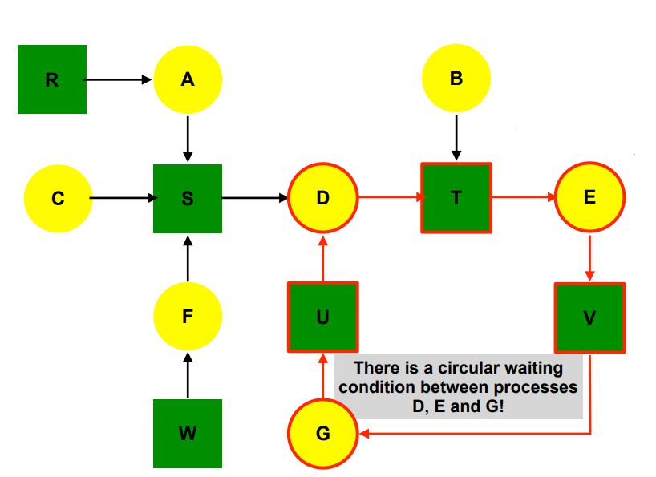
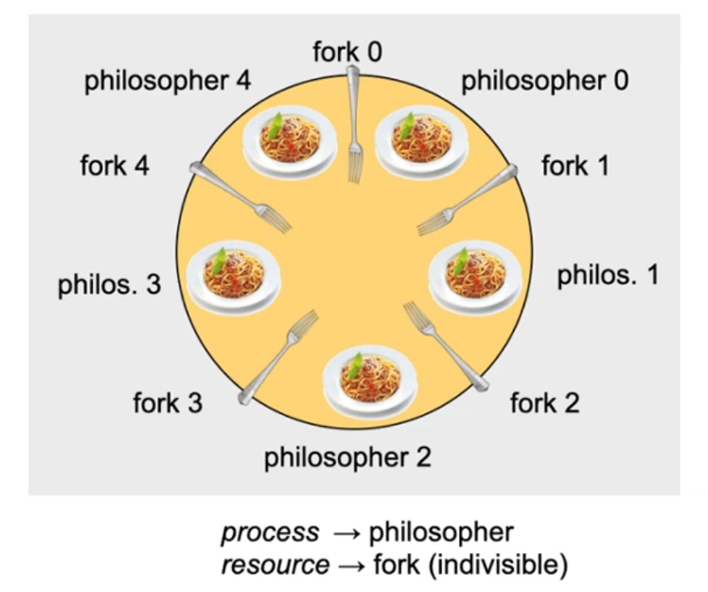
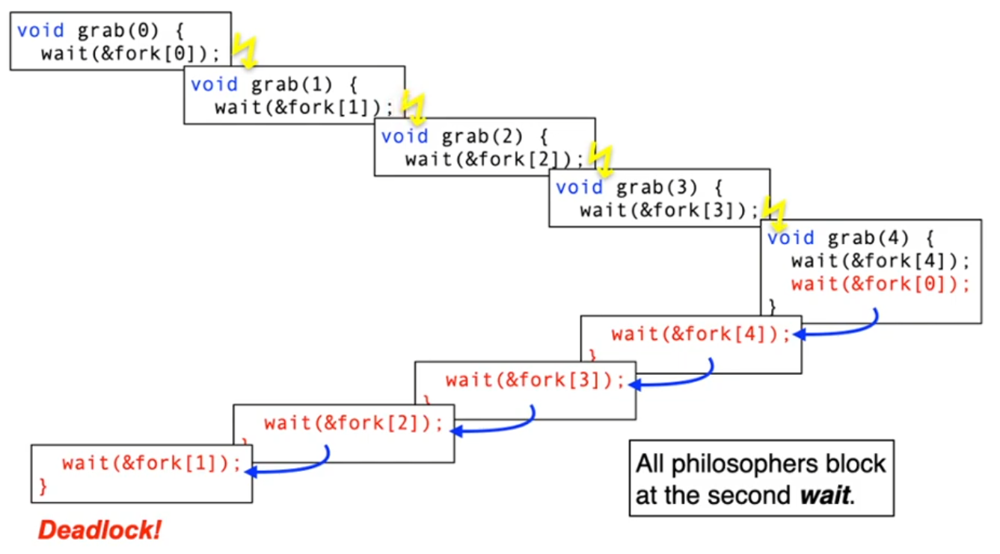
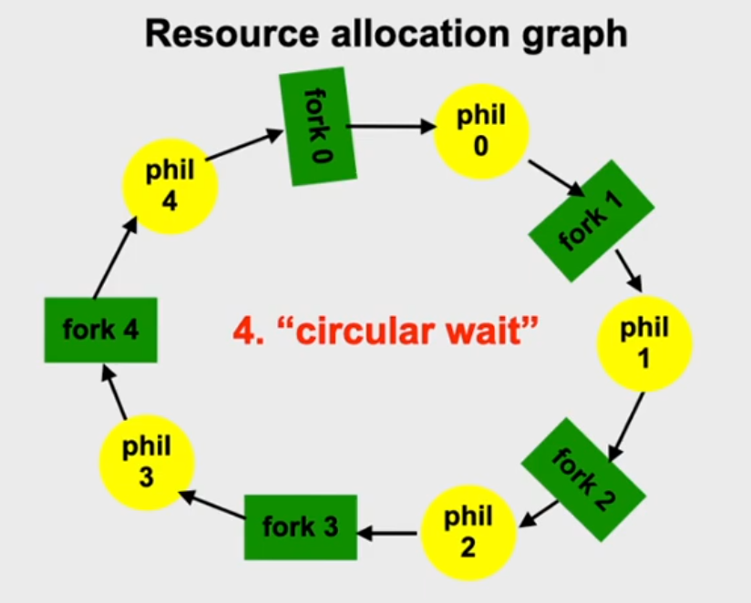
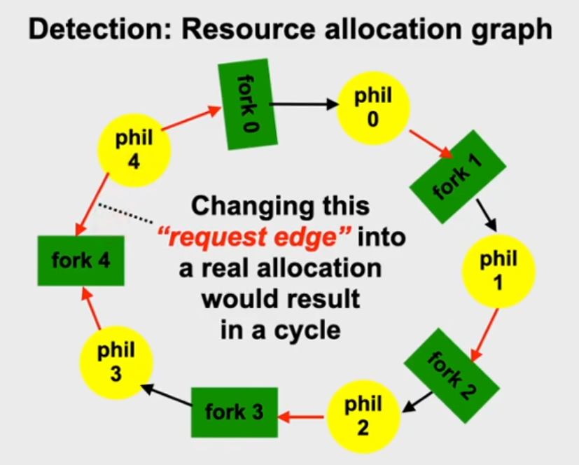

↩️ vault/public
Lecture 7: Concurrency: Deadlocks
<iframe width="560" height="315" src="https://www.youtube.com/embed/VSaop2ycn28" title="YouTube video player" frameborder="0" allow="accelerometer; autoplay; clipboard-write; encrypted-media; gyroscope; picture-in-picture" allowfullscreen
</iframe>
Exam
Problems using synchronization and possible solutions
Important questions:
- Can you define the terms "deadlock" and "livelock"?
- Explain situations leading to both problems
- What are the necessary conditions for deadlocks to occur?
- What is the additional condition that is required for a deadlock to occur?
- Which types of resources exists related to synchronization?
- What are the components of a resource allocation graph, how do you construct it?
- How can you detect a deadlock in this graph?
- What is the dining philosophers problem?
- Why do deadlocks occur here?
- Can you describe a solution to solve the problem?
- Can you discuss the efficiency of different solutions?
- How can deadlocks be prevented and what are safe/unsafe states?
- Which methods exist to resolve a deadlock and what are their pros/cons?
Deadlocks

Why is this happening?

Deadlocking processes
The term deadlock (in computer science) means
[...] A situation in which two or more processes are unable to process because each is waiting for one of the others to do something.
- Alternative 1: Deadlock
- Passive waiting
- Process state is BLOCKED
- Alternative 2: Livelock
- Active waiting (busy waiting or "lazy" busy waiting)
- Arbitrary process state (including RUNNING) but none of the involved processes is able to proceed
- Deadlocks are the "lesser evil"
- This state is uniquely discoverable
- Basis to "resolve" deadlocks are available
- This state is uniquely discoverable
- Active waiting results in an extremely high system load
Conditions for deadlocks
All of the following three conditions must be fulfilled for a deadlock to occur:
- Exclusive allocation of resources ("mutual exclusion")
- Only one process may use a resource at a time. No process may access a
resource unit that has been allocated to another process 2. Allocation of additional resources ("hold and wait")
- A process may hold allocated resources while awaiting assignment of
other resources 3. No removing of resources ("no preemption")
- The OS is unable to forcibly remove a resource from a process once it is
allocated 4. Only if an additional condition occurs at runtime, we really have a deadlock:
- "circular wait" - A closed chain of processes exists, such that each process holds at least
one resource needed by the next process in the chain
Resources...
are administered by the operating system and provided to the processes. There are two kinds of resources:
- Reusable resources
- Are allocated by processes for a certain time and released
again afterwards
- Examples: CPU, main and mass storage, I/O devices, system
data structures such as files, process table entries, …
- Typical access synchronization: mutual exclusion
- Consumable resources
- Are generated (produced) and destroyed (consumed) while
the system is running
- Examples: Interrupt requests, signals, messages, data from
input devices
- Typical access synchronization: one-sided synchronization
Reusable resources
- A deadlock occurs if two processes each have allocated a
reusable resource which is afterwards additionally requested by the respective other process
- Example: A computer has 200 GB of main memory.
Two processes allocate the memory in steps. The allocation is blocking 
Consumable resources
- A deadlock occurs if two processes each wait for a
consumable resource which is produced by the respective other process
- Example: synchronization signals exchanged between the
two processes using the semaphore operations wait and signal 
Resource allocation graphs
... are used to visualize and also automatically detect deadlock situations
- They describe the current system state
- The nodes are processes and resources
- The edges show an allocation or a request

- Question to consider:
- Is there a state of circular waiting?
- Which processes and resources are part of it?
- Example: 7 processes A – G and 6 resources R – W
- Current state:
- A allocates R and requests S.
- B allocates nothing but requests T.
- C allocates nothing but requests S.
- D allocates U and S and requests T.
- E allocates T and requests V.
- F allocates W and requests S.
- G allocates V and requests U.

Classic deadlock: dining philosophers
Five philosophers spend their life either thinking or eating. And they love eating spaghetti! [1] To eat, the philosophers sit around a round table. Thinking makes you hungry – every philosopher has to eat! To eat spaghetti, a philosopher needs both forks next to her or his plate! 
Deadlocked philosophers?
Here, the three first necessary conditions are fulfilled:
- "mutual exclusion"
- Philosophers need both forks in order to eat spaghetti.
- "hold and wait"
- The philosophers are so deep lost in thought before
they eat that they are neither able to take both forks at the same time nor have the idea to put back a single fork.
- "no preemption"
- Of course, it is not appropriate to take another
philosopher’s fork while it is in use.
- But does this necessarily lead to a deadlock?
Dining philosophers: version 1
/* all philosophers are
concurrent... */
void phil (int who) {
while (1) {
think();
grab(who);
eat();
drop(who);
}
}
void think () { ... }
void eat () { ... }
semaphore fork[NPHIL] = {
{1, NULL}, ...
};
void grab (int who) {
wait(&fork[who]);
wait(&fork[(who+1)%NPHIL]);
}
void drop (int who) {
signal(&fork[who]);
signal(&fork[(who+1)%NPHIL]);
}
Using a semaphore guarantees mutual exclusion when accessing the forks. By tradition, every philosopher first takes the right and then the left fork.  
Dining philosophers: version 2
The problem in version 1 was the consequence of a process switch between the 1. und 2. wait – a critical section. Version 2 protects this critical section using mutual exclusion.
semaphore mutex = {1, NULL};
void grab (int who) {
wait(&mutex);
wait(&fork[who]);
wait(&fork[(who+1)%NPHIL]);
signal(&mutex);
}
- Is this solution deadlock free? Yes, …
- 1 process maximum can wait for a fork (a cycle needs 2!)
- A process waiting for mutex has no fork
- Is this a good solution? No, …
- When philowho eats, philowho+1 blocks in the critical sections. All others then also block. Many spaghetti get cold.
- Low level of concurrency and inefficient resource use!
Dining philosophers: version 3
const int N = 5; /* Number of philosophers */
semaphore mutex = {1, NULL}; /* Mutual exclusion */
semaphore s[N] = {{0, NULL},...}; /* one semaphor per philos. */
enum { THINKING, EATING, HUNGRY } status[N]; /* Philos. state*/
int left(i) { return (i+N-1)%N; } /* Index left neighbor */
int right(i) { return (i+1)%N; } /* Index right neighbor */
void test (int i) {
if (state[i] == HUNGRY && state[left(i)] != EATING &&
state[right(i)] != EATING) { // Can only start eating if no neighbour is eating
state[i] = EATING;
signal(&s[i]);
}
}
void grab(int i) {
wait(&mutex);
state[i] = HUNGRY;
test(i);
signal(&mutex);
wait(&s[i]);
}
void drop(int i) {
wait(&mutex);
state[i] = THINKING;
test(left(i)); // Signal to neighbours that they might be able to start eating
test(right(i));
signal(&mutex);
}
This solution is deadlock free and has the maximum degree of concurrency.
Discussion: dining philosophers
- In particular: usually there are many different ways to
ensure a system is deadlock free
- Solutions differ in the possible degree of concurrency
- A solution that is too restrictive implies that resources
are unnecessary idle at least a part of the time
- In general: dining philosophers are a representative
example for the administration of atomic resources
- Invented by E. Dijkstra (1965)
- Established standard scenario to evaluate and
demonstrate operating system and language mechanisms for concurrent programming
Preventing deadlocks
- Indirect methods invalidate one of the conditions 1–3
- use non blocking approaches
- only allow atomic resource allocations
- enable the preemption of resources using virtualization
- virtual memory, virtual devices, virtual processors
- Direct methods invalidate condition 4
4. introduce a linear/total order of resource classes:
- Resource Ri can only be successfully allocated
before Rj if i is ordered linear before j (i.e. i < j)
- Rules that prevent deadlocks
- Methods at design or implementation time
Preventing deadlocks (2)
- Preventing circular waiting (in a running system) using strategic
approaches:
- none of the first three necessary conditions is invalidated
- continuous requirements analysis avoids circular waiting
- Resource request of processes have to be controlled:
- always keep a "safe state":
- there is no process sequence in which all of the processes can obtain their maximum resource requirements
- "unsafe states" are avoided:
- request denies in case of non-satisfiable resource requirement
- requesting processes are not serviced or suspended early
- always keep a "safe state":
- Problem: this approach has to know the maximum resource
requirements in advance
Safe/unsafe states
(using the dining philosophers example)
- Starting point: five forks are available
- each philosopher needs two forks to eat
- Situation: P0, P1 and P2 have one fork each, two forks are free
- P3 requests a fork → one fork is still free
- safe state: one of three philosophers could eat
- the request of P3 is allocated (accepted)
- P4 requests a fork → no more forks are free
- unsafe state: none of the philosophers could eat
- the request of P4 has to wait
- if four philosophers have one fork each, the fifth is blocked before taking the first fork
- P3 requests a fork → one fork is still free

Safe/unsafe states (2)
(using the example of multiple instances of resources)
- Starting point: a primitive Unix system with a maximum of 12
shared memory segments
- Process P0 needs 10 segments max., P1 four and P2 nine
- Situation: P0 uses 6 segments, P1 and P2 each two;
two segments are free
- P2 requests a segment, one remains free → unsafe state
- request of P2 is denied, P2 has to wait
- P0 requests two segments, none would be free → unsafe state
- request of P0 is denied, P0 has to wait
- safe process sequence: P1 → P0 → P2
Detection: Banker's algorithm
- Administers process/resource matrices for the current maximum allocation
- Function to find a process sequence that guarantees that the system does not run out of resources even when all processes completely use their "credit limit"
- Predictive application of this function in case of resource allocations
Deadlock detection
- Deadlocks are (silently) accepted ("ostrich algorithm")...
- Nothing in the system tries to avoid the occurrence of waiting cycles!
- None of our four conditions is invalidated
- Approach: create waiting graph and search for cycles → O(n)
- Checking too frequently wastes resource and compute time
- Checking too infrequently wastes unused resources
- Cycle search take place in large time intervals only, if…
- Resource requests take too much time
- The CPU load decreases even though the number of processes increases
- The CPU is already idle for a long time
Deadlock resolution
Recovery phase after the detection phase
- Terminate processes to release resources
- Terminate deadlocked processes step by step (lots of effort)
- Start with the "most effective victim" (?)
- Terminate all deadlocked processes (large possible damage)
- Terminate deadlocked processes step by step (lots of effort)
- Preempt resources and start with the "most effective victim" (?)
- Roll back or restart the affected process
- Use transactions, checkpointing/recovery (lots of effort)
- A starvation of the rolled back processes has to be avoided
- Also: take care of livelocks!
- Roll back or restart the affected process
- Balance between damage and effort:
- Damages are unavoidable, so we need to consider what the consequence is
Discussion of prevention methods
- Methods to avoid/detect deadlocks have little practically
relevance in the context of operating systems
- They are very difficult to implement, require too much
overhead and are thus not useable
- Since sequential programming is still the predominant
approach, avoidance and detection methods are rarely required
- The risk of deadlock can be solved by virtualizing resources
- Processes only request/allocate logical resources
- Using virtualization, physical resources can be removed (preempted) from a process (without the process noticing) in critical moments
- Accordingly, the "no preemption" condition is invalidated
➙ Prevention methods more commonly used & relevant in practice
Conclusion
- Problems with deadlocks and livelocks
- "[...] a situation in which two or more processes are unable to proceed because each is waiting for one of the others to do something."
- livelocks are the bigger problem of the two
- For a dead/lifelock to occur, four conditions have to occur
simultaneously:
- Exclusive allocation, hold and wait, no preemption of
resources
- Circular waiting of the processes requesting the resources
- Handling dead/lifelocks implies:
- prevent, avoid, detect/resolve
- the discussed approaches can also be combined